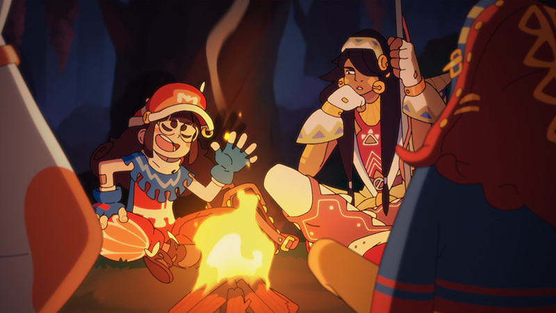

ABOUT THIS GAME
Haste is a high-speed third-person running game, set in a collapsing universe. Race through a variety of worlds, master your movement and use items and abilities to progress through each level before it falls apart around you. The game consists of ten Shards, each featuring a collection of procedurally generated levels that must be completed without fail to unlock the next. You’ll encounter challenges and characters on your journey, seeking answers about what lies behind the destruction, and how to escape it!
FEATURES
Third-person high-speed running gameplay
10 Shards, each featuring a collection of procedurally generated levels that must be completed without fail to advance to the next Shard
90+ Items that let you customize your build for each attempt to clear a Shard
A story to explore and a lovable cast of characters to befriend
Four spectacular biomes with several different variations
4 abilities to master and 4 different bosses to discover
An unlockable endless mode
MASTER YOUR MOVEMENT

Mind-blowing speed is key and every landing counts! Hit the ground running (literally) and you’ll build up speed, but if you fumble it will cost you. You’ll need to think fast and keep track of your ever-changing surroundings to escape before the world crumbles beneath your feet.
ITEMS

In your run you'll be able to collect Sparks to use in the shop levels to manifest items. Items help you customise your run, affecting speed, damage, luck, health and other variables.
PROCERURAL WORLDS

Speed through procedurally generated levels as you make your way through each Shard, completing every level before you run out of lives to advance to the next. Gather items and experiment with builds to help you on your way. Your journey through the broken worlds will be unique to you as you try to outrun the apocalypse.
THE CREW

As Zoe, you’ll meet different characters to aid you on your journey, whether through wisdom, encouragement or items to assist you.